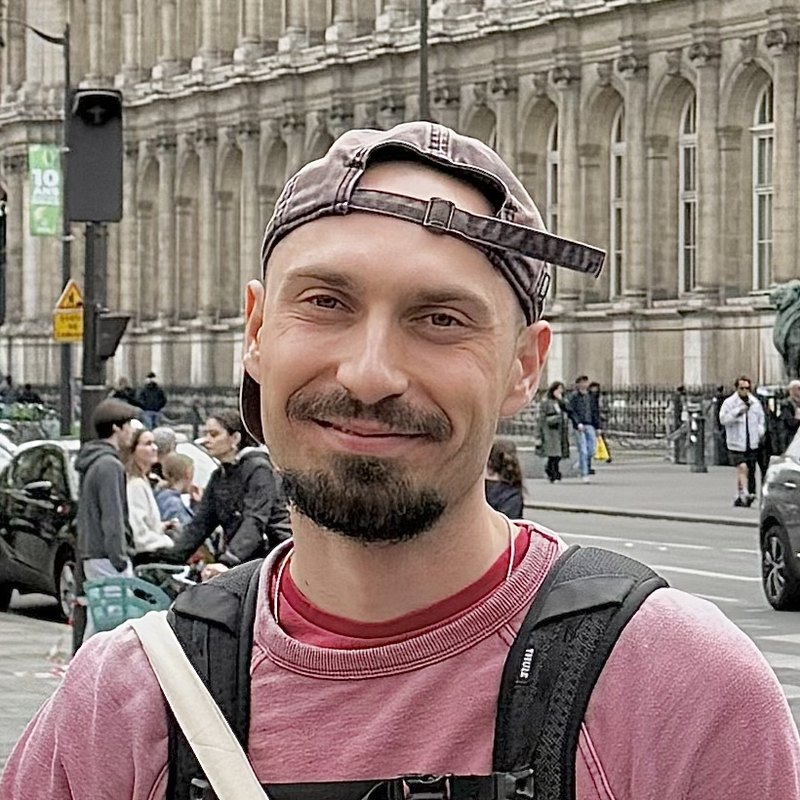
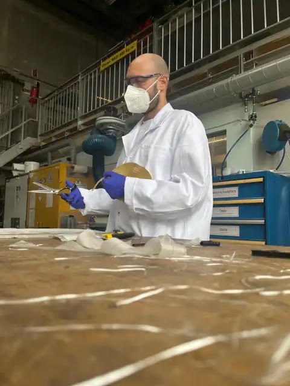

Master’s student in Materials Science and Engineering at EPFL, after a bachelor’s in the same field at Penn State, specialized in polymer science. For my master’s thesis at Empa in St. Gallen, I worked on healable, reprocessable and flame-retardant β-amino phosphine oxide epoxy CANs (covalent adaptable networks).
- EPFLMSc, Materials Science and Engineering
- EmpaMaster’s thesis, 2026
- Penn StateBSc, GPA 3.78 / 4.0
Highlights
- Repairable, fire-safe epoxy. Master’s thesis at Empa, now a 2026 preprint: epoxy networks that repair surface damage and can be reprocessed five times, with the best formulation still rated UL 94 V-0.
- Vitrimer composites. Made by frontal polymerization at EPFL: thiol-acrylate composites that remember their shape and can be reprocessed.
- Printable sensor hydrogels. Double-network granular hydrogels for wearable resistive sensors, printed by direct ink writing at EPFL.
Research
-
Oct – Dec 2026Graduate research assistant Laboratory for Processing of Advanced Composites, EPFL · Lausanne
Processing, characterization and chemical recycling of glass-fiber-reinforced dual-cure acrylate–amine vitrimer composites.
Details
- Optimizing hot vacuum infusion parameters to improve resin impregnation and composite manufacturing.
- Investigating resin shelf life, storage stability and changes in composite thickness over time before UV-induced photopolymerization.
- Evaluating mechanical properties by tensile testing, three-point bending and interlaminar shear strength (ILSS) testing.
- Investigating chemical recycling by solvolysis in polyethylene glycol (PEG), focusing on resin degradation and recovery of the glass fibers.

In the lab -
Feb – Aug 2026Master’s thesis Empa, Department of Advanced Fibers, Additives and Chemistry Group (Dr. Cédric Hervieu) · St. Gallen
Reprocessable flame-retardant thermosets based on covalent adaptable networks via aza-Michael addition chemistry.
Details
- Synthesized monomers by Grignard reactions, with column and thin-layer chromatography, crystallization, rotary evaporation and devolatilization.
- Confirmed product structures and the aza-Michael chemistry by NMR (including solid-state NMR of the resin), model reactions, DIP-MS and Raman spectroscopy.
- Prepared β-amino phosphine oxide epoxy (APOE) covalent adaptable network resins by thermal curing, and showed their self-healing and reprocessing by hot pressing.
- Evaluated flame retardancy (UL 94, cone calorimetry, PCFC) and elemental, thermal and mechanical properties.
-
Feb – Jun 2025Master’s research project Laboratory for Processing of Advanced Composites (Prof. Véronique Michaud), EPFL · Lausanne
Frontal polymerization of vitrimer composites.
Details
- Investigated thiol-acrylate vitrimer composites with transesterification-based bond exchange, made by frontal polymerization, as sustainable alternatives to thermosets.
- Studied how catalyst concentration (DMAP) and PET microparticle content (0–10 vol%) affect thermal stability, mechanical properties and bond-exchange dynamics.
- Demonstrated shape memory, reprocessability and suitability for circular-economy applications.
-
Sep 2024 – Jan 2025Master’s research project Laboratory for Soft Materials (Prof. Esther Amstad), EPFL · Lausanne
Double-network granular hydrogels for wearable resistive sensors.
Details
- Developed double-network granular hydrogels from PAMPS microgels and PEG-based deep eutectic solvents.
- Evaluated how PEG molecular weight and hydrogen-bond acceptor type affect swelling, resistivity, rheology and direct-ink-writing (DIW) printability.
- Demonstrated shear-thinning behavior, stress recovery and successful DIW 3D printing.
-
Jan 2022 – May 2024Undergraduate research assistant Hickey Research Group, Department of Materials Science and Engineering, Penn State · University Park, PA
Shape-memory triblock copolymer hydrogel fibers produced by wet spinning.
Details
- Investigated how processing parameters (concentration, solvent, strain rate, needle gauge, injection speed) affect fiber processing efficiency, structure and mechanical properties.
- Compared solvents (THF vs. DMF) for actuation stroke, actuation rate and work density of fiber actuators.
- Designed mineralization experiments with SOS hydrogel fibers to replicate collagen fibril mineralization, and analyzed crystallization of strained vs. non-strained fibers.
- Wrote MATLAB code to process water-actuation video recordings and quantify actuation kinetics.
Selected projects
-
2025OptiFlow, with Decathlon MGT-555 Innovation & Entrepreneurship in Engineering, EPFL · Runner-up, 2025 IEE Prize
An AI-powered wearable RFID system, with ultra-wideband positioning, that tracks shelf stock in real time to cut out-of-stock situations and improve restocking. Built by a team of six with Decathlon Sports Switzerland. I was responsible for hardware development and integration, prototype testing, the sustainability analysis and the business case.
Publications
-
2026β-Amino phosphine oxide chemistry enables healable, reprocessable, and flame-retardant epoxy networks Hervieu, C., Žimbrek-Turković, G., Cirillo, C., Rupper, P., Sekar, A., Jović, M., Lehner, S., Gaan, S. · Preprint, SSRN
-
2026Recyclable Flame-Retardant Epoxy–Amino Ester Covalent Adaptable Networks Enabled by Sustainable Polyelectrolyte Complexes Hervieu, C., Cirillo, C., Lehner, S., Žimbrek-Turković, G., Petri, M., Rupper, P., Jović, M., Sekar, A., Grunlan, J. C., Gaan, S. · Preprint, SSRN
Education
-
2024 – 2027MSc in Materials Science and Engineering EPFL · Lausanne, Switzerland
Minor in Management of Technology and Entrepreneurship. Expected graduation February 2027.
-
2020 – 2024BSc in Materials Science and Engineering Penn State University · University Park, PA, United States
Specialized in polymer science. Graduated May 2024, GPA 3.78 / 4.0. Dean’s List every semester except Fall 2020.
Awards and scholarships
-
2025Runner-up, EPFL Innovation & Entrepreneurship in Engineering (IEE) Prize
For OptiFlow, built with Decathlon (see Selected projects).
-
2023Penn State representative, Undergraduate Student Speaking Contest, MS&T 2023
Selected by the Department of Materials Science and Engineering to present undergraduate research on biocompatible shape-memory triblock copolymer hydrogel fibers produced by wet spinning.
-
2020 – 2024Undergraduate recognition, Penn State
- 2nd place of 12 teams, Materials Engineering Methodology and Design Grand Challenge, for an ammonia-based fuel cell for renewable energy storage.
- Featured in a College of Earth and Mineral Sciences video on undergraduate research.
-
2022 – 2024Five scholarships, Penn State
Details
- John and Elizabeth Holmes Teas Scholarship (2022–23, 2023–24)
- Penn State Metallurgy Alumni Scholarship (2022–23, 2023–24)
- Materials Science and Engineering Opportunity Hancock Scholarship (2023–24)
- Product Evaluation Systems, Inc. Scholarship (2023–24)
- Robert G. and Agnes M. Faber Scholarship (2022–23)
Research topics
Laboratory skills
Software
Contact
Send me a message here. It reaches my inbox, and my email address stays private.